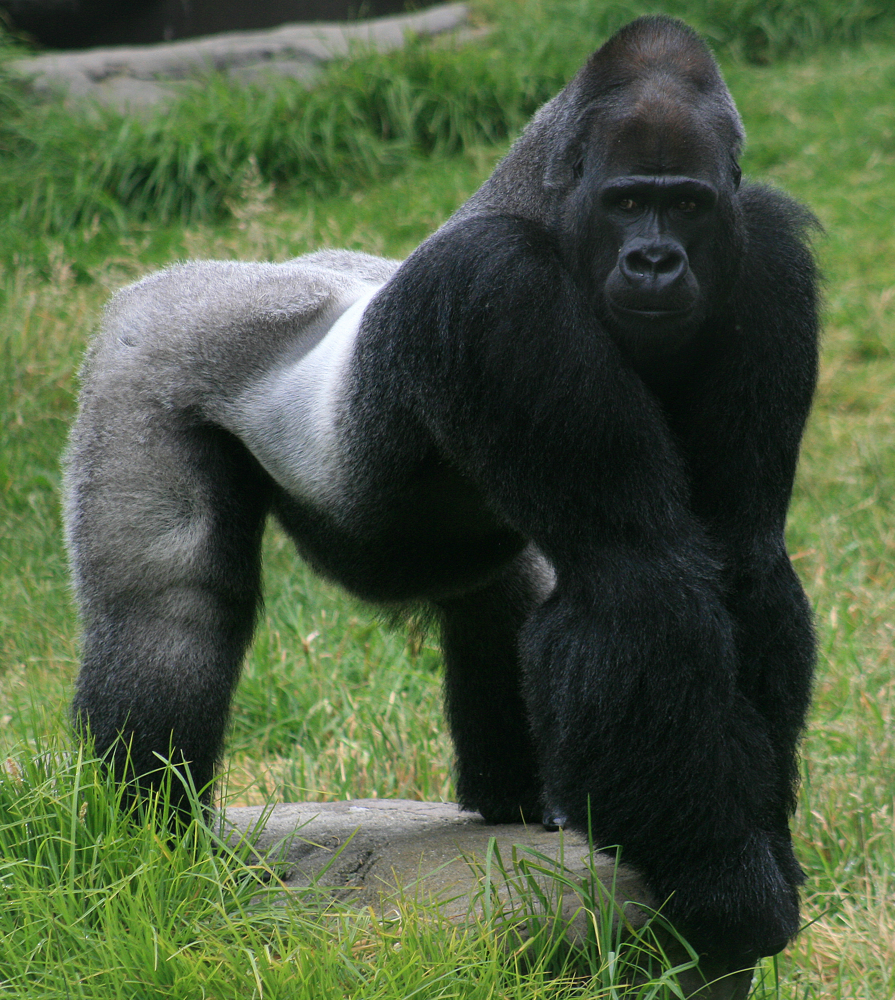

Gorillini
Klik hier voor meer informatie over de Gorillini
De gorilla's (Gorilla) zijn een geslacht van Afrikaanse mensapen
die tot de orde primaten (Primates) behoren, met twee soorten.
Het zijn de grootste nog levende primaten.
Evolutie
De naaste verwanten van gorilla's zijn de andere twee Homininae-geslachten, chimpansees
en mensen, die allemaal ongeveer 7 miljoen jaar geleden zijn afgeweken van een
gemeenschappelijke voorouder. Menselijke gensequenties verschillen gemiddeld slechts 1,6%
van de sequenties van overeenkomstige gorillagenen, maar er is nog meer verschil in het aantal
kopieën van elk gen. Tot voor kort werden gorilla's beschouwd als één enkele soort, met drie
ondersoorten: de westelijke laaglandgorilla, de oostelijke laaglandgorilla en de berggorilla.
Er is nu overeenstemming dat er twee soorten zijn, elk met twee ondersoorten. Meer recentelijk
werd beweerd dat er een derde ondersoort bestond in een van de soorten. De afzonderlijke
soorten en ondersoorten ontwikkelden zich uit één enkel type gorilla tijdens de ijstijd, toen hun
boshabitats krompen en van elkaar geïsoleerd raakten. Primatologen blijven de relaties tussen
verschillende gorillapopulaties onderzoeken. De hier genoemde soorten en ondersoorten zijn
waarover de meeste wetenschappers het eens zijn. De voorgestelde derde ondersoort van
Gorilla beringei, die nog geen trinomen heeft gekregen, is de Bwindi-populatie van de
berggorilla, ook wel de Bwindi-gorilla genoemd. Sommige variaties die de classificaties van
gorilla onderscheiden, zijn onder meer verschillende dichtheid, grootte, haarkleur, lengte,
cultuur en gezichtsbreedte. Populatiegenetica van de laaglandgorilla's suggereert dat de
westelijke en oostelijke laaglandpopulaties ongeveer 261 duizend jaar geleden uiteen gingen.
Leefgebied

Gorilla's hebben een fragmentarische verspreiding.
Het verspreidingsgebied van de twee soorten wordt gescheiden
door de Congo-rivier en zijn zijrivieren. De westelijke gorilla leeft
in het westen van Centraal-Afrika, terwijl de oostelijke gorilla in het oosten van Centraal-Afrika leeft. Tussen de soorten, en zelfs binnen de soort, leven gorilla's in verschillende habitats en hoogtes. Het leefgebied van de gorilla varieert van bergbos tot moerasgebied. Oostelijke gorilla's bewonen berg- en submontane bossen tussen 650 en 4.000 m boven zeeniveau.
Berggorilla's leven in bergbossen aan de hogere kant van het hoogtebereik, terwijl oostelijke laaglandgorilla's in submontane bossen aan de onderkant leven. Bovendien leven oostelijke laaglandgorilla's in bergachtige bamboebossen, evenals in laaglandbossen met een hoogte van 600 tot 3.308 m. Westerse gorilla's leven zowel in laaglandmoerasbossen als in bergbossen, op hoogtes variërend van zeeniveau tot 1.600 m. Westelijke laaglandgorilla's leven in moeras- en laaglandbossen tot 1.600 m, en Cross River-gorilla's leven in laaggelegen en submontane bossen, variërend van 150 tot 1.600 m.